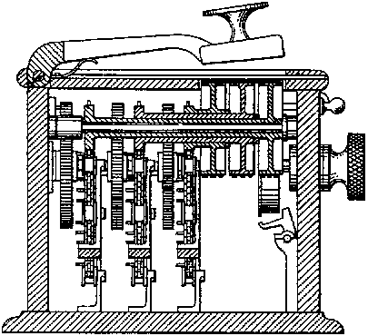

In Volume 36 No. 6 of The American Mathematical Monthly, published in Summer of 1929, Lester S. Hill authored an article titled “Cryptography in an Algebraic Alphabet”, wherein he outlined the first known polygraphic substitution cipher to support arbitrarily large alphabets and messages, although at the time, any significant usage was prohibitively cumbersome.
The operations needed to decode a message would be very time consuming to perform by hand, and designing a mechanical system to perform the decryption would be an absolute nightmare! Below is a figure from Hill’s patent for his “message protector” machine, which was capable of peforming 6x6 matrix multiplication modulo 26.

However, the key and alphabet for the machine had to be “hard-coded”, meaning that to use the cipher securely, you were recommended to (effectively) perform a manual “public key encryption” on your messages before feeding them into the machine. Still, Hill’s cipher represents an important step toward modern cryptography, even if it went unappreciated in his time.
The Method
Below is the source code for my implementation of the Hill cipher in Python 3. – Summary: – Prerequisites:
- an alphabet and a keyphrase.
- a mapping of the alphabet to integers.
- Encoding:
- Use the map to create a square matrix of dimension n from the keyphrase.
- Use the map to create a matrix of n rows (and however many columns) from the message.
- Multiply the encoding matrix by the message matrix.
- Use the map to turn the resulting matrix back into characters of your alphabet.
- Decoding:
- Use the map to create a square matrix of dimension n from the keyphrase.
- Now, make the modular multiplicative inverse of that matrix. This is your decoder, and where most of the work happens.
- Use the map to create a matrix of n rows (and however many columns) from the encoded message.
- Multiply the decoder matrix by the encoded matrix.
- Use the map to turn the resulting matrix back into characters of your alphabet.
- Caveats:
- decryption requires far more work than encryption.
- the lengths of the key and alphabet must be relatively prime.
- doing this by hand would make most people cry.
#!/usr/bin/env python3
import math
import numpy as np
# output toggle
if False:
verbose = print
else:
verbose = lambda x: None
# alphabet
alphabet = [c for c in ' abcdefghijklmnopqrstuvwxyz0123456789.?,-']
verbose(f"alphabet:\n\t{alphabet} of length {len(alphabet)}")
# character map
alphamap = dict(zip(range(0, len(alphabet)), alphabet))
mapreverse = dict(zip(alphamap.values(), alphamap.keys()))
verbose(f"character map:\n\t{alphamap}")
def encode(key, message):
key, message = key.lower(), message.lower()
# 1. compute encoding matrix A
A = build_encoding_matrix(key)
verbose(f"encoding matrix 'A':\n{A}")
# 2. compute message matrix B
B = build_message_matrix(len(A), message)
verbose(f"our message matrix 'B':\n{B}")
# 3. compute AB
AB = A * B
for row in AB:
for x in row:
x %= len(alphabet)
verbose(f"the matrix 'AB(mod {len(alphabet)})':\n{AB}")
# 4. translate AB into characters
encoded = ''.join([alphamap[i] for i in AB.A1])
verbose(f"the encoded message:\n'{encoded}'")
return encoded
def decode(key, encoded):
key, encoded = key.lower(), encoded.lower()
# 1. compute encoding matrix A
A = build_encoding_matrix(key)
# 2. compute decoding matrix A'
B = inversemodmat(A, len(alphabet))
# 3. compute message matrix B
M = build_message_matrix(len(B), encoded)
verbose(f"our message matrix 'M':\n{M}")
# 4. compute AB
BM = B * M
for row in BM:
for x in row:
x %= len(alphabet)
verbose(f"the matrix 'BM(mod {len(alphabet)})':\n{BM}")
# 5. translate AB into characters
decoded = ''.join([alphamap[i] for i in BM.A1])
verbose(f"the decoded message:\n'{encoded}'")
return decoded
# helper functions
def powermod(x, y, m):
if y == 0:
return 1
p = powermod(x, y//2, m) % m
p = (p**2) % m
if y % 2 == 0:
return p
else:
return (x * p) % m
def inversemodp(a, p):
# we happen to know p will be prime, so we can use Fermat's Theorem
d = math.gcd(a, p)
if d != 1:
return None
else:
return powermod(a, p - 2, p)
def identitymat(n):
return [[int(x == y) for x in range(0, n)] for y in range(0, n)]
def inversemodmat(mat, q):
n = len(mat)
A = np.matrix(mat)
inv = np.matrix(identitymat(n))
for i in range(0, n):
factor = inversemodp(A[i, i], q)
if factor is None:
raise ValueError('We got a problem =[')
A[i] = A[i] * factor % q
inv[i] = inv[i] * factor % q
for j in range(0, n):
if i != j:
factor = A[j, i]
A[j] = (A[j] - factor * A[i]) % q
inv[j] = (inv[j] - factor * inv[i]) % q
return inv
def build_encoding_matrix(key):
verbose(f"key {key} of length {len(key)}")
n = math.ceil(math.sqrt(len(key)))
verbose(f"meaning our encoding matrix 'A' will be {n}x{n} with \
{n**2 - len(key)} padding values")
# build the matrix
A, pad = [], 1
for i in range(0, n): # rows
A.append([])
for j in range(0, n): # cols
idx = j + i*n
if idx >= len(key):
A[-1].append(pad)
pad += 1
else:
A[-1].append(mapreverse[key[idx]])
return np.matrix(A)
def build_message_matrix(n, message):
B = []
m = math.ceil(len(message) / n) # same # of rows!
for i in range(0, n): # rows
B.append([])
for j in range(0, m): # cols
idx = j + i * m
if idx >= len(message):
B[-1].append(0) # pad with zeroes
else:
B[-1].append(mapreverse[message[idx]])
return np.matrix(B)
if __name__ == '__main__':
# test!
codeword = "esketit"
message = "math is fun"
print(f"key: {codeword}\nmessage: {message}")
print(f"encoded: {encode(codeword, message)}")
print(f"decoded: {decode(codeword, encode(codeword, message))}")